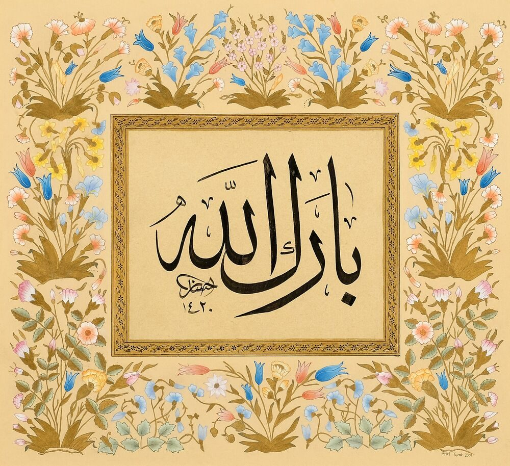
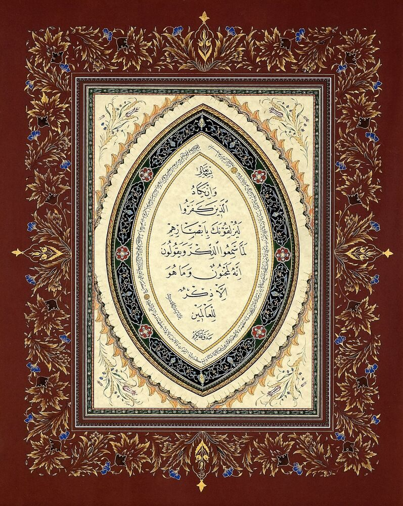
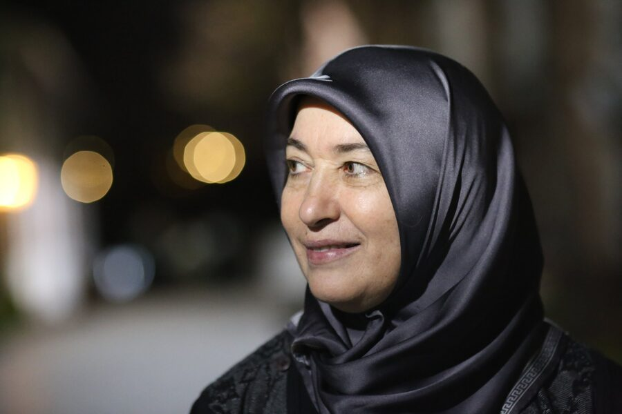
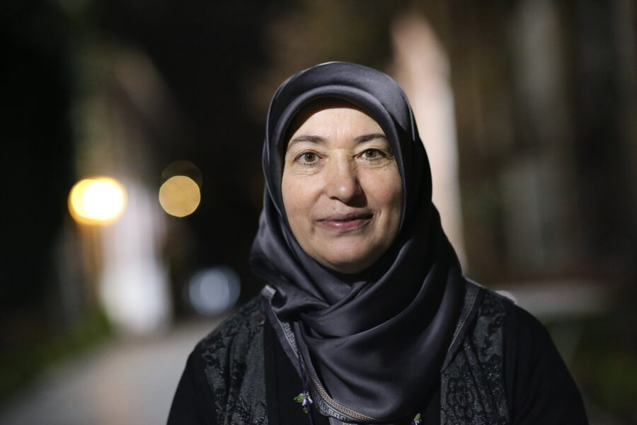
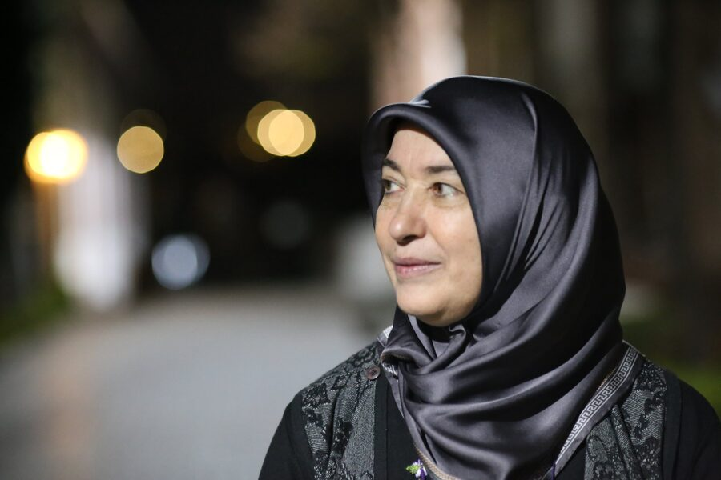
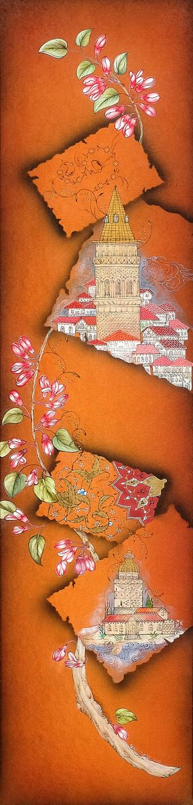
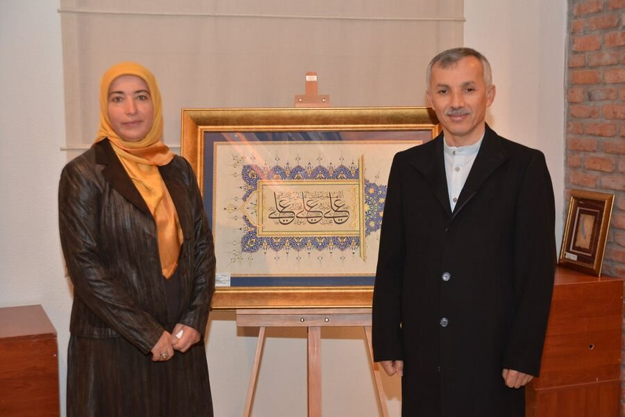
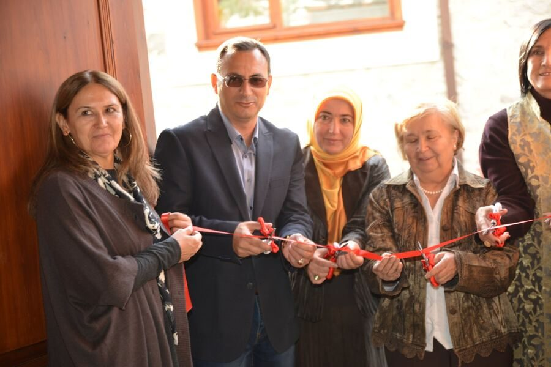
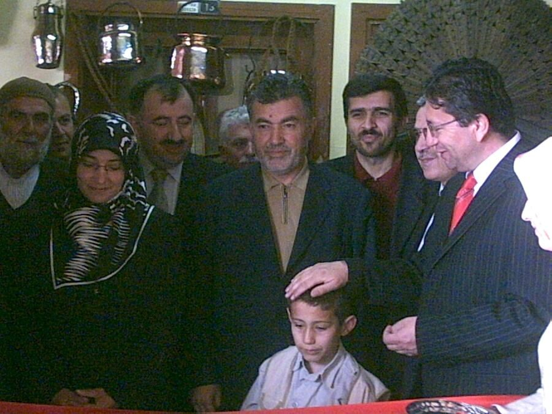
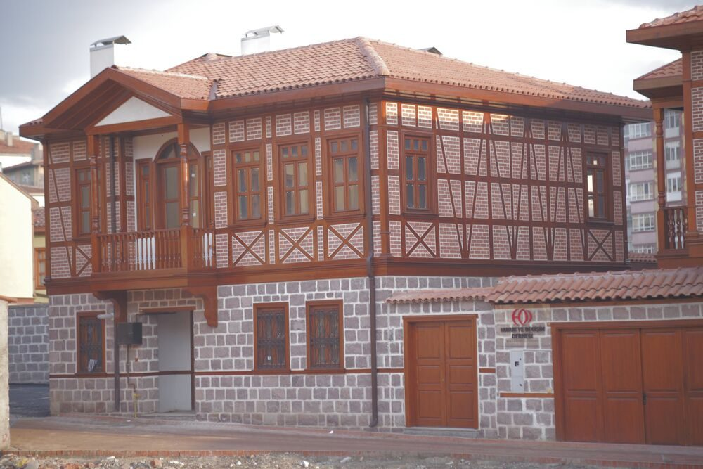

Tezhip
Illumination
Gold and pigment ornament — rumi, hatai and bulut motifs — that frames and honors the written word.
Kâğıt üzerinde altının sanatı
For more than thirty years, Aysel Toprak has practiced tezhip — the classical Ottoman art of illuminating manuscripts and calligraphy with burnished gold, hand-ground pigments and geometric and floral ornament. Alongside illumination she works in ebru marbling, miniature painting and hand-painted çini.




“Tezhip is patience made visible — every leaf of gold is laid by hand, one breath at a time.”quote to confirm
Aysel Toprak is a Turkish master illuminator (müzehhibe) working in the classical tradition of the Ottoman court ateliers. Her practice centers on tezhip (illumination) — including the illumination of hilye-i şerif and of calligraphic panels written by master calligraphers — together with ebru (marbling), minyatür (miniature painting) and hand-painted çini ceramics.
Working with 22–24 karat gold leaf, shell gold and mineral pigments prepared by hand, she builds each composition through the traditional sequence of pattern drawing, pouncing, gilding, burnishing and fine outlining with brushes of a few hairs. Her work has been shown in exhibitions in Türkiye and is held in private collections.
Detailed biography, education and master lineage (icazet) will be added from the artist information form.to complete
Each piece is made entirely by hand, following methods passed from master to apprentice for over five centuries.

Gold and pigment ornament — rumi, hatai and bulut motifs — that frames and honors the written word.
Pigments floated on thickened water and lifted onto paper — every sheet a single, unrepeatable moment.

Fine-brush painting in the Ottoman miniature tradition — cityscapes, flowers and storytelling in jewel-like color.
Plates and tiles hand-painted with İznik-inspired tulips, carnations and saz leaves, then glazed and fired.
Original illuminations and hilye compositions. Select any work to view it larger.
Calligraphy in these panels is by master calligraphers (hattat); Aysel Toprak is the illuminator. Calligrapher credits are noted per work.credits to add
Moments from past exhibitions. Upcoming shows and workshops in the United States will be announced here.




Tezhip has always been taught in the atelier, side by side. Aysel Toprak offers introductory and advanced workshops for those who want to experience the discipline firsthand.
For acquisitions, commissions, exhibition proposals and workshop invitations.
Original works, commissions and fine-art giclée prints by Aysel Toprak are available through Artista Noble.
Galleries, museums and universities interested in exhibitions or residencies.
Group and private workshops, demonstrations and lectures in the U.S.